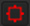

将查看器连接到给定节点的输出时 (通过选择节点并按数字键), 核武器 立即开始使用所有可用的本地处理器在查看器中呈现输出。
请记住以下提示，以加快这种类型的预览渲染:
• 首先，如果你不需要评估整个图像，放大感兴趣的区域。 核武器 然后仅渲染扫描线在查看器中可见的部分。
• 或者，您可以使用查看器的感兴趣区域 (ROI) 功能仅渲染图像的一部分，同时在整个图像的上下文中查看结果。
| 1。 | 新闻 Alt + W 在观众。观众的 ROI 按钮变成红色  ,表示已启用该功能。 |
| 2. | 拖动查看器以绘制感兴趣的区域。查看器现在只渲染区域内的像素。 |
| 1。 | 单击 ROI 按钮，使其变成红色 。当前 ROI 的覆盖显示在查看器中。 |
| 2. | 要重新定位 ROI: |
使用 ROI 中间的十字准线，将 ROI 拖动到所需位置。
| 3. | 要调整 ROI 大小: |
拖动 ROI 的任何角落或侧面，直到达到所需大小。
单击查看器的
ROI
按钮。它变成灰色
 ,信号是关闭。查看器现在渲染所有可见图像。
,信号是关闭。查看器现在渲染所有可见图像。
|
|